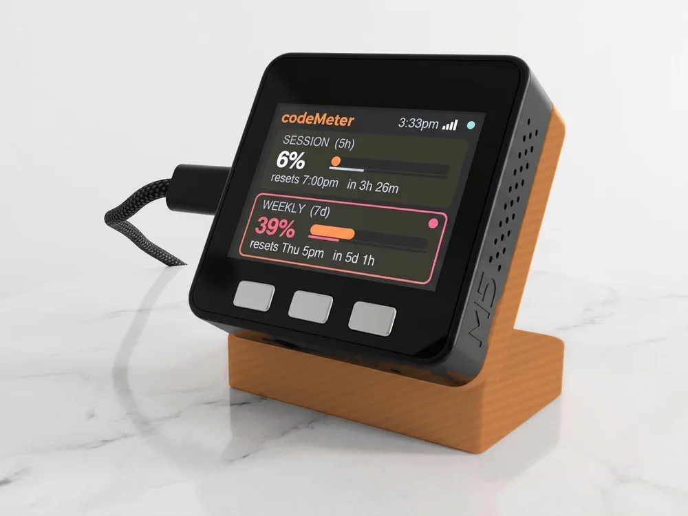

Toronto · 5 teams
Toronto sports, on one screen.
MLB, NBA, NHL, MLS, WNBA. Pick up to six Toronto teams; they take turns, and whoever is playing takes over.
Build yours
From $119

The screen fills in with the real record and next game when the scores feed loads.
Teams
Every Toronto team it follows.
Each page shows that team's own screen.
FAQ
Questions.
Can sportsMeter follow every Toronto team at once?
Yes. Toronto has 5 teams here and sportsMeter follows up to six, so all of them fit on one screen.
What happens when two Toronto teams play at the same time?
Live games take the screen and take turns with each other every 12 seconds until they end. Double tap the left button to stay on one.
How do I set it up for Toronto teams?
Plug it in, scan the code on the screen and pick your 2.4 GHz Wi-Fi. Then add each team: choose its league, then the team, and Save.